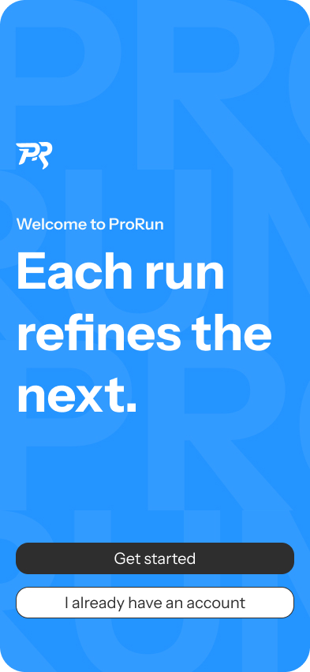
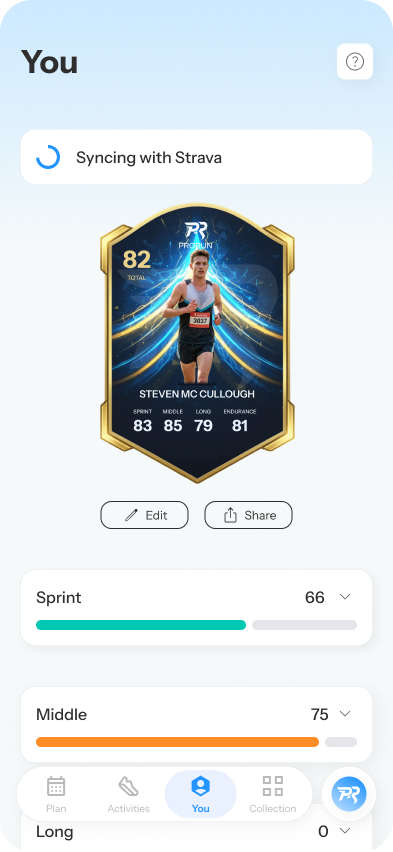
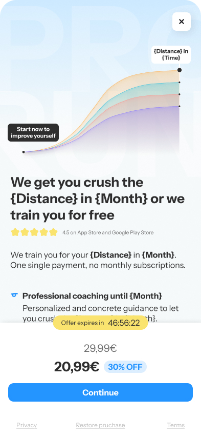

ProRun
Designing an AI-powered running platform that transforms training plans, wearable data and coaching into one motivating experience.
Overview
ProRun is a mobile platform built to help runners prepare for their next race through adaptive training plans, AI-powered coaching and wearable integration. Instead of simply tracking activities, the product guides users throughout their entire journey—from defining a goal to completing a race—while keeping motivation high through personalised feedback, progression systems and premium coaching.
The challenge
Most running applications are excellent at collecting data, but far less effective at helping users understand what to do next. The objective was to design a product capable of translating complex metrics into simple decisions, making coaching feel approachable while maintaining long-term engagement.
- Create an onboarding experience that clearly communicates the product value.
- Build trust around AI-generated coaching.
- Transform training data into meaningful insights.
- Increase retention through motivation rather than notifications.
- Support premium conversion without interrupting the experience.
Designing the first experience
The onboarding was designed around progressive disclosure, introducing one concept at a time to reduce cognitive load while immediately showcasing the product value. Rather than explaining every feature upfront, each screen focuses on a single benefit, allowing runners to understand why ProRun is different before creating their first training plan.



Building a training experience
Training plans became the centre of the experience. Every workout is organised around a clear weekly schedule, making progress immediately understandable while keeping the interface lightweight and distraction-free. Visual indicators help runners recognise completed sessions, current accuracy and future milestones without navigating through multiple screens.


AI coaching that feels human
Instead of replacing traditional coaching, the AI assistant was designed to complement it. The experience focuses on contextual conversations that explain performance, answer follow-up questions and provide practical advice after every workout. The goal wasn't simply to generate text, but to create interactions that feel relevant, supportive and trustworthy throughout the runner's journey.


Turning data into actionable insights
Every completed session generates an easy-to-read summary that combines pace, heart rate, elevation and interval accuracy into a single overview. Rather than overwhelming runners with numbers, the interface prioritises clarity, allowing users to quickly understand how the workout went and where improvements can be made.

Designing motivation beyond training
Progress is not only measured through kilometres. ProRun introduces a collectible runner card system that evolves over time, encouraging users to improve different running abilities while rewarding consistency through seasonal achievements and event collections. The visual progression gives athletes a stronger sense of identity and long-term motivation.


Designing premium without disrupting the experience
The monetisation flow was designed to communicate long-term value rather than create unnecessary friction. Instead of aggressive interruptions, premium features are introduced when users have already experienced the core product, making the upgrade feel like a natural continuation of their journey. Clear benefits, contextual messaging and limited trial access help balance business goals with a positive user experience.


Design principles
Progress over numbers
Help runners understand improvement instead of exposing raw metrics.
Reduce cognitive load
Introduce one concept at a time to keep every interaction simple and approachable.
Support, don't overwhelm
AI should encourage users with contextual feedback instead of becoming another source of notifications.
Consistency builds motivation
Visual progression, collections and personalised goals reinforce long-term engagement.
Outcome
ProRun allowed me to work across the entire product lifecycle, from early concept exploration to production-ready interfaces. Throughout the project I collaborated closely with developers and stakeholders to refine user flows, validate design decisions and build a scalable mobile experience centred around AI coaching, training plans and gamification. This project strengthened my ability to simplify complex information, design engaging mobile products and balance user needs with business objectives.